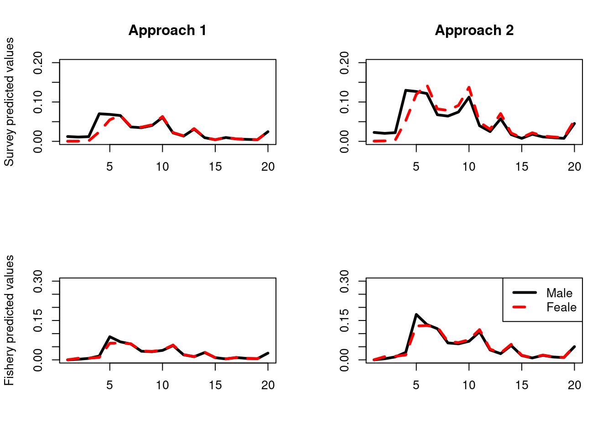

Chapter 4 Exploring methods for sex ratios in age and length composition data
One of the needed improvements is dealing with sex ratios in the compositional data. Currently it is difficult to see how there is any information on sex ratio in the Alaskan sablefish stock assessment given how the observations are structured (Chapter 3) (Caveat is users can provide an observed sex ratio for observations etc which is similar to the approach in Ward et al. (2019)). I am aware of two approaches for supplying observations that in theory should provide information on sex ratio. The first (approach 1) was taken from Casal2 (Doonan et al. 2016). This treats sexed composition data for a year as a single proportion i.e., proportions across all ages and sexes sum to one for each year,
\[
\boldsymbol{P}^k_{y} = \frac{(C^k_{a,y,1},C^k_{a,y,2})}{\sum_a \sum_s C^k_{a,y,s}}, \quad \sum \boldsymbol{P}^k_{y} = 1
\]
where, \(C^k_{a,y,1}\) is the catch at age (numbers) for males in year \(y\), age \(a\) and survey \(k\). \(\boldsymbol{P}^k_{y}\) is a proportion vector that sums to one that covers both sexes and corresponding ages. The likelihood contribution for this approach follows
\[
\boldsymbol{P}^k_{y} \sim Multinomial(\mathbb{E}[\boldsymbol{P}^k_{y}], N^{eff, k}_{y}) \ .
\]
where, \(N^{eff, k}_{y}\) is the effective sample size for this survey and year.
The second approach (approach 2) is to treat composition for each sex seperately that is proportions at age or length for a sex will sum to one, but also provide a specific sex ratio observation over all ages or lengths as done in the New Zealand rock lobster stock assessment (Webber, Rudd, and Starr 2021).
\[ R^k_{y,s} = \frac{\sum_a \{C^k}_{a,y,s}}{\sum_a \sum_s \{C^k}_{a,y,s}}, \quad \sum_s R^k_{y,s} = 1 \] and, \[ P^k_{a, y,s} = \frac{\{C^k}_{a,y,s}}{\sum_a \{C^k}_{a,y,s}}, \quad \sum_a P^k_{a, y,s} = 1 \ . \] The likelihood assumptions for this model are, \[ R^k_{y,s} \sim Binomial(\mathbb{E}[R^k_{y,s}], \sum_s N^{eff, k}_{y,s}) \] and, \[ \boldsymbol{P}^k_{y,s} \sim Multinomial(\mathbb{E}[\boldsymbol{P}^k_{a, y,s}], N^{eff, k}_{y,s}) \ . \] where, \(N^{eff, k}_{y,s}\) is the effective sample size.
Simulation testing
A simple simulation experiment was conducted to explore the benefits of each approach. There were two OM scenarios that we wanted to explore, the first was that the true population had a 50:50 sex ratio and the observations had skewed sex ratios due to the selectivity i.e., availability to the survey fishery. Second the selectivity was constant for both sexes but the sex ratio was skewed at recruitment.
bio_params = list(
ages = 1:20,
L_inf_m = 58,
K_m = 0.133,
t0_m = 0,
L_inf_f = 62,
K_f = 0.143,
t0_f = 0,
M = 0.15,
a_m = 2.18e-9, ## tonnes
b_m = 3.2,
a_f = 2.08e-9, ## tonnes
b_f = 3.3,
m_a50 = 2.3,
m_ato95 = 1.2,
sigma = 0.6,
h = 0.85,
sigma_r = 0.6,
R0 = 8234132,
plus_group = 1 # 0 = No, 1 = Yes
)
other_params = list(
s_a50_m = 3.6,
s_ato95_m = 2,
s_a50_f = 4.6,
s_ato95_f = 1.4,
s_q = 0.2,
s_alpha = 1,
f_a50_m = 4.2,
f_ato95_m = 1.17,
f_a50_f = 4.7,
f_ato95_f = 1.76,
f_alpha = 1,
ssb_prop_Z = 0.5,
survey_prop_Z = 0.5,
survey_age_error = c(0.5, 0.4), ## sd, rho (ignored if iid)
fishery_age_error = c(0.5, 0.4), ## sd, rho (ignored if iid)
survey_bio_cv = c(0.1)
)
ages = bio_params$ages
max_age = max(bio_params$ages)
n_years = 30
years = (2020 - n_years + 1):2020
n_ages = length(ages)
## annual fishing mortality
start_F = c(rlnorm(10, log(seq(from = 0.02, to = 0.1, length = 10)), 0.1), rlnorm(10, log(0.08), 0.1), rlnorm(10, log(0.07), 0.1))
recruit_devs = log(rlnorm(n_years, -0.5 * bio_params$sigma_r * bio_params$sigma_r, bio_params$sigma_r))##################################
### Build TMB OM with Multinomial
##################################
#dyn.unload(dynlib(file.path(DIR$book,"TMB","SexDisaggregatedAgeStructuredModel")))
compile(file.path("TMB","SexDisaggregatedAgeStructuredModel.cpp"), flags = "-Wignored-attributes -O3",DLLFLAGS="");## [1] 0dyn.load(dynlib(file.path("TMB","SexDisaggregatedAgeStructuredModel")))
## tolerance form model convergence, all gradients need to be less than this.
grad_tol = 0.001
# these parameters we are not estimating.
na_map = fix_pars(par_list = true_pars, pars_to_exclude = c("logit_survey_alpha_f","logit_f_alpha_f","ln_catch_sd","ln_extra_survey_cv","ln_sigma_r", "logit_proportion_male"))
ASM_obj <- MakeADFun(TMB_data, true_pars, DLL= "SexDisaggregatedAgeStructuredModel", map = na_map,checkParameterOrder=FALSE)## Constructing atomic D_lgammaTMB_data_alt = TMB_data
TMB_data_alt$survey_AF_type = 1
TMB_data_alt$fishery_AF_type = 1
ASM_obj_alt_sex <- MakeADFun(TMB_data_alt, true_pars, DLL= "SexDisaggregatedAgeStructuredModel", map = na_map,checkParameterOrder=FALSE)
##################################
### Generate predictions from both methods to compare
##################################
sim_data = ASM_obj$simulate(complete = T)
sim_data_alt = ASM_obj_alt_sex$simulate(complete = T)
par(mfrow = c(2,2))
plot(survey_ages, sim_data_alt$survey_comp_fitted[1:n_ages,9], type = "l", lwd = 3, ylab = "Survey predicted values", main = "Approach 1", xlab = "", ylim = c(0,0.2))
lines(survey_ages, sim_data_alt$survey_comp_fitted[(n_ages + 1):(n_ages*2),9], type = "l", lwd = 3, lty = 2, col = "red")
plot(survey_ages, sim_data$survey_comp_fitted[1:n_ages,9], type = "l", lwd = 3, ylab = "", main = "Approach 2", xlab = "", ylim = c(0,0.2))
lines(survey_ages, sim_data$survey_comp_fitted[(n_ages + 1):(n_ages*2),9], type = "l", lwd = 3, lty = 2, col = "red")
plot(fishery_ages, sim_data_alt$fishery_comp_fitted[1:n_ages,9], type = "l", lwd = 3, ylab = "Fishery predicted values", main = "", xlab = "", ylim = c(0,0.3))
lines(fishery_ages, sim_data_alt$fishery_comp_fitted[(n_ages + 1):(n_ages*2),9], type = "l", lwd = 3, lty = 2, col = "red")
plot(fishery_ages, sim_data$fishery_comp_fitted[1:n_ages,9], type = "l", lwd = 3, ylab = "", main = "", xlab = "", ylim = c(0,0.3))
lines(fishery_ages, sim_data$fishery_comp_fitted[(n_ages + 1):(n_ages*2),9], type = "l", lwd = 3, lty = 2, col = "red")
legend('topright', legend = c("Male","Feale"), col = c("black", "red"), lty = c(1,2), lwd = 3)